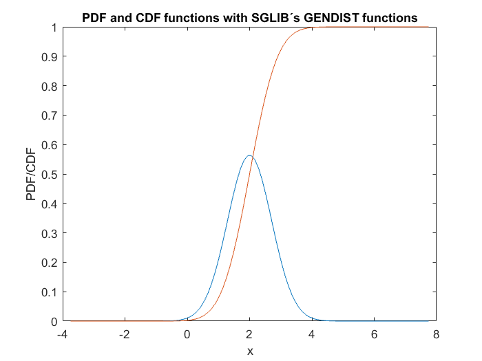
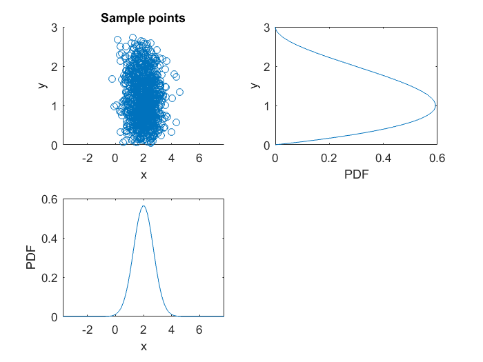

Contents
Tutorial I. 2/3
This SCRIPT shows how one can use the PDF and the CDF functions with the help of the libary package SGLIB using the GENDIST functions Here, the same PDF and CDF functions are plotted as in TUTORIAL_1_2..but without samples. It is also herein shown, how to sample from a given distribution, and get the moments of the distribution
clear variables
clf
PLOT PDF and CDF without sampling with the GENDIST functions of SGLIB
% Define N(0,1) density X_dist = gendist_create('normal', {0,1}); % Change mean to 2 and variance to 0.5 X_dist=gendist_fix_moments(X_dist, 2, 0.5); % Or instead of the first two steps, just simply define the moments directly: X_dist = gendist_create('normal', {2,sqrt(0.5)}); % Define the x values for the plot X_lims=gendist_invcdf([0+eps,1-eps], X_dist); x=linspace(X_lims(1), X_lims(2),100); % The corresponding probabilities: f_X=gendist_pdf(x, X_dist); F_X=gendist_cdf(x, X_dist); % Plot the CDF and the PDF functions plot(x, f_X) hold on plot(x, F_X) title('PDF and CDF functions with SGLIB´s GENDIST functions') xlabel('x') ylabel('PDF/CDF')
Sampling and moments with the help of the GENDIST functions
% Define the distribution of the RV Y from which we want to sample: Y_dist=gendist_create('beta', {2,3}); % Shift and scale the distribution, such that the bounds are at 0 and 3: Y_dist=gendist_fix_bounds(Y_dist, 0,3); % Sample from standard uniform distribution U[0,1]: p = rand(1,100); % Use the inverse CDF function to sample: Y_samples=gendist_invcdf(p, Y_dist); % The last two step can be replaced simply with the function: Y_samples=gendist_sample(1000, Y_dist); % Check the mean and the variance and higher order moments of Y: [mean_Y, var_Y, skew, kurt]=gendist_moments(Y_dist); % Sample also from the RV X X_samples=gendist_sample(1000, X_dist);
Plot the sample points and their distribution
figure subplot(2,2,1) scatter(X_samples, Y_samples) xlabel('x') ylabel('y') title('Sample points') xlim(X_lims) ylim([0,3]) subplot(2,2,2) y=linspace(0,3,100); f_Y=@(y)gendist_pdf(y, Y_dist); plot(f_Y(y),y) xlabel('PDF') ylabel('y') ylim([0,3]) subplot(2,2,3) plot(x, f_X); ylabel('PDF') xlabel('x') xlim(X_lims)